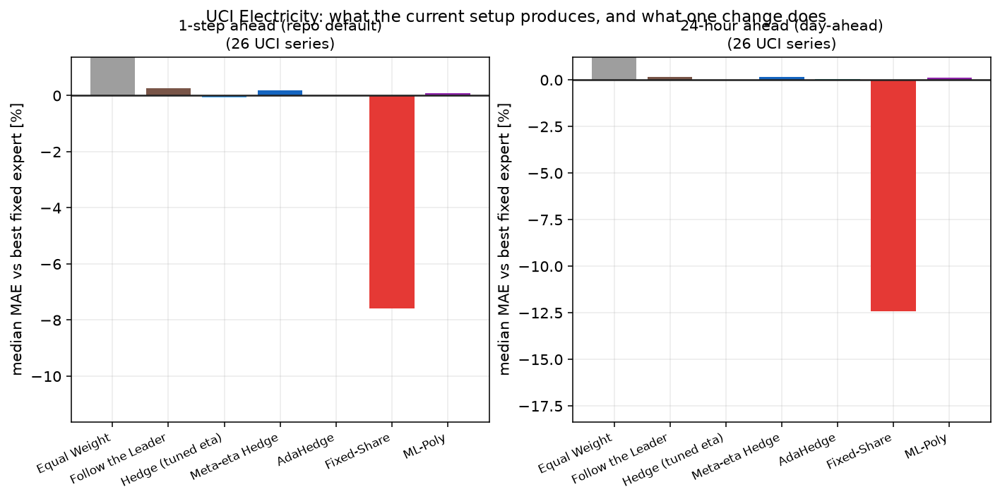

実験レポート：既定設定はなぜ退屈なのか
本プロジェクトの既定設定（1 時間先予測 + light30 Expert 群 + Meta-η Hedge）を、 UCI Electricity Load Diagrams の実データで再現しました。 結論から言うと、結果が面白くないのは実装の問題ではなく設計上そうなるべくしてなっている ことが確認できました。原因を 3 つに分解し、それぞれに対する処方箋を示します。
実験設定
| データ | UCI Electricity Load Diagrams 2011–2014（370 系列、15 分粒度 → 1 時間集約） |
|---|---|
| 対象系列 | 26 系列をランダム抽出（seed 42） |
| Expert 群 | light30 相当 30 本（Naive / 移動平均 / EMA / Drift / Ridge / 季節プロファイル） |
| 学習期間 | 2011-01-01 〜 2013-12-31（学習を要する Expert のみ使用） |
| 評価期間 | 2014-07-01 〜 2014-12-31（逐次オンライン評価） |
| 損失 | 重み更新は訓練 MAE で正規化した絶対誤差、評価は生の MAE |
| 比較対象 | 事後的に最良だった単一 Expert（＝ regret の基準） |
比較対象を「事後的に最良の 1 本」にしているのは、これが Hedge の理論保証がうたう相手だからです。 実務上はもっと強い相手（自分では選べない相手）なので、これに並べば健闘、下回れば大成功です。
結果
| アルゴリズム | 1 時間先：最良固定 Expert 比 | 勝率 | 24 時間先：最良固定 Expert 比 | 勝率 |
|---|---|---|---|---|
| Equal Weight | +147.65% | 0% | +91.85% | 0% |
| Follow the Leader | +0.27% | 0% | +0.16% | 0% |
| Hedge (tuned eta) | -0.07% | 69% | -0.02% | 58% |
| Meta-eta Hedge | +0.18% | 19% | +0.15% | 8% |
| AdaHedge | -0.00% | 50% | +0.04% | 38% |
| Fixed-Share | -7.60% | 96% | -12.41% | 100% |
| ML-Poly | +0.08% | 0% | +0.10% | 0% |
Equal Weight が大きく劣るのは、急変時にまったく当たらない Expert （長窓の移動平均など）を等しく信用してしまうためです。

Meta-η Hedge は最良固定 Expert に対して +0.2% 前後。 つまり 30 本の Expert を混ぜた意味がほぼゼロで、 「事後に分かる最良の 1 本」にわずかに届かないだけの存在になっています。 Follow the Leader（累積損失が最小の Expert に全張りするだけ）とも差がありません。
原因の分解
原因 1：絶対誤差では、最良の 1 本を超えられない
アルゴリズム解説で述べたとおり、Hedge の保証は 「最良の固定 Expert + \(O(\sqrt{T \ln N})\)」です。超えるとは言っていません。 絶対誤差（線形な損失）では指数重み法に有利な構造（mixability）がないため、 アンサンブルが単一 Expert を上回る理由が理論上ありません。
そして重みは \(w_i \propto e^{-\eta L_i}\)、つまり累積損失だけで決まります。 数千ステップも回れば累積損失の差は開ききり、重みは事実上 1 本に集中します。 Hedge は 時間とともに Follow the Leader に収束していくので、結果が一致するのは当然です。
原因 2：データが定常で、勝つべき Expert が入れ替わらない
1 時間先の電力需要は「1 時間前の値」でほぼ説明できてしまいます。 実際、評価期間を通じて最良だった Expert は系列ごとにほぼ 1 本に固定されており、 時間とともに入れ替わることがありません。乗り換えの余地がない以上、 どんな適応アルゴリズムを持ってきても得るものがありません。
原因 3：Expert 群が「1 強 + その他」になっている
light30 は「同じ family のパラメータ違い」を並べて 30 本にしています （SMA の窓長違い、EMA の α 違い、SeasonalNaive の周期違い）。 その結果、Ridge 系が 1 本だけ突出して強く、残りは明確に弱い、という構成になりがちです。 Expert Advice が利得を生むのは 「強さが同程度で、外し方が違う」Expert が複数いるときなので、この構成は不利です。 等重み平均が最良 Expert の 2〜3 倍悪いのは、その裏返しです。
処方箋：何を変えると効くのか
上の 3 つのうち、原因 1 と 2 に直接効く変更を 2 つ試しました。どちらも同じデータ・同じ Expert 群のままです。
(a) アルゴリズムを Fixed-Share にする
重みに下限 \(\alpha/N\) を設けるだけで、重みが「累積損失」ではなく 「直近の損失」で決まるようになります。これは実質的に 「忘却付きの Hedge」であり、定常に見えるデータでも局所的な得意・不得意の変化を拾えます。 既定設定のままアルゴリズムだけ差し替えて、 最良固定 Expert 比 -7.6% （勝率 96%）。
(b) タスクを翌日予測にする
1 時間先予測は簡単すぎて差が出ません。実務で必要なのは翌日の需要なので、 予測ホライズンを 24 時間先に変えました。すると Expert ごとの得意・不得意がはっきり分かれ、 集約の利得が広がります。Fixed-Share は -12.4% （勝率 100%）。
Expert を増やすことでも、η のチューニングでもなく、 「重みが過去に引きずられない」ようにすることが効きました。 Meta-η Hedge は η を自動化しますが、比較対象は「最良の固定 Expert」のままなので、 この問題は解決しません。
付録：実装上の発見
この実験にあたり、src/data/load_uci.py が
実際の UCI 配布ファイルを読み込めないことが分かりました。
pd.read_csv(..., parse_dates=[0], dayfirst=True) という指定は、
ISO 形式（2011-01-13 00:15:00）のファイルで 13 日以降の日付が現れると
pandas が日付解析を諦め、警告なしに文字列のままのインデックスを返します。
その結果、後続の preprocess() が
TypeError: Only valid with DatetimeIndex で停止していました。
先頭数行だけのテストデータでは再現しないため、テストは通っていました。
日付解析を read_csv 任せにせず、ISO 形式を優先して明示的に変換し、
解析できない場合のみ日欧形式にフォールバックするよう修正しました
（回帰テスト tests/test_preprocess.py::TestLoadElectricityIndexParsing つき）。
次に読む
ここでは「効かない条件」を確認しました。逆に Expert Advice が本来の力を発揮する条件を、人工データと 3 つの実データで 再現した結果を追試結果にまとめています。